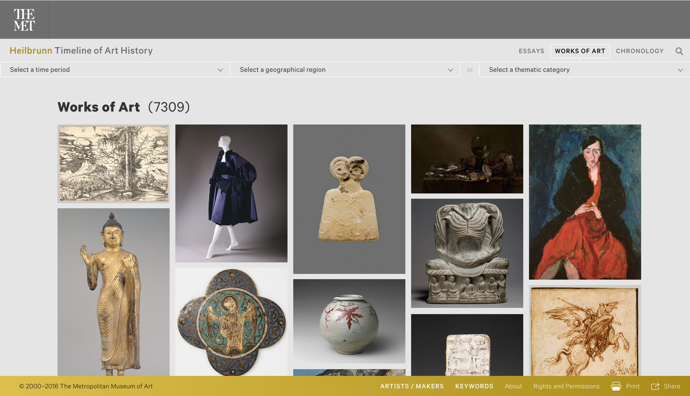
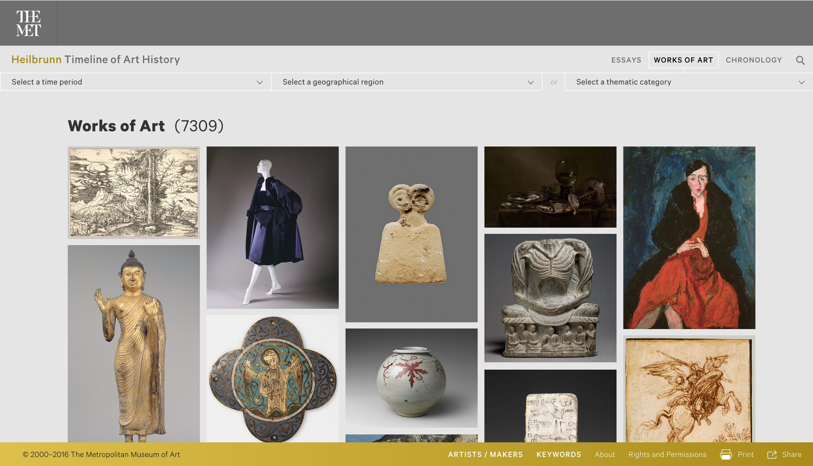

David Gorelik's Student Page
Hey! Welcome to my page.
You can email me here: dgorelik@massart.edu
Assignments
- Assignment #1 - You are here
- Assignment #2
- Assignment #3
- Assignment #4
Here's a list of websites that I like:
- Apple
I really like the simplicity of Apple's website. The navigation bar and menus are easy to use and consistent throughout the site. I also enjoy the use of big, beautiful imagery and repsonsive animations across all of its pages, which makes the site very fun to look at.
- Squarespace
Although Squarespace is a business that builds other websites, its own site is very well designed. Its visual style is very clean, light and modern, which is reflected in the website templates it sells. Huge, beautiful photos are are also heavily used and look great as backdrops for text and sliders.
- Method
Method is a digital design agency located in Auckland, New Zealand. Their website is really fun and unique because of its bold color palette and quick animations. I love how they incorporated their company colors into everything, including the map. Everything is responsive and smooth, including the the animated loading screens and landing pages.
- The Met
The Metropolitan Museum of Art in NYC was recently rebranded, and also redesigned their website. This new site is much better designed, with bold, larger navigation and more images from the museum's collections. I think that the redesign was very successful, espcially because of how easy the site is to use and view the artwork.
- Google Arts & Culture - National Parks Service
This site was designed by Google's Arts & Culture program to explore different US national parks. The website is incredibly dynamic and interactive, with each page leading to different 360-degree videos that show off various national parks across the country. The video pages act like interactive tours that allow users to click on different features and learn about the parks. Besides being so cool, it's easy to navigate as well.
Why am I taking Web Design?
I wanted to take the Web Design class at MassArt because I am interested in designing websites and other digital media. Although I love traditional 2D art and design, I feel that the modern world is becoming more and more involved with technology, so we cannot only focus on traditional print media. The internet is everywhere nowadays, and I think it's important for artists and designers to recogize it as a valuable resource and medium for their work. During my summer internship, one of the senior designers told me that I should look into more digital and web design classes, since that is where the future of design trends will be. I think web design is a very important skill for all 21st century designers to have. By the end of this course, I hope to have working knowledge of web design, and have the skills to be able to build functional, basic but nice-looking websites. I am also interested in other digital design technologies such as mobile app design, interactive websites and art, and motion graphics
Good Web Design Gallery
 
